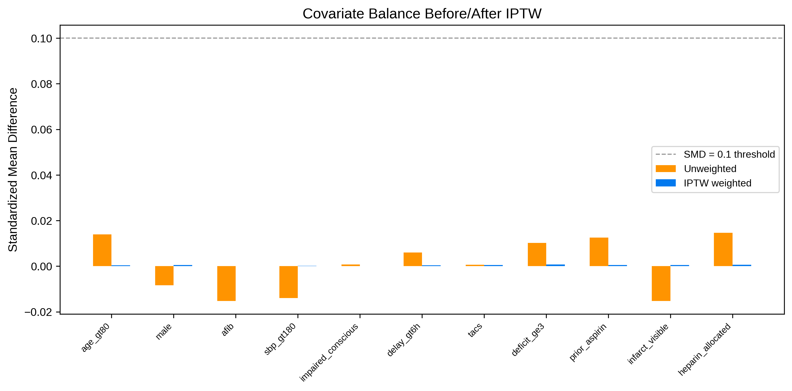
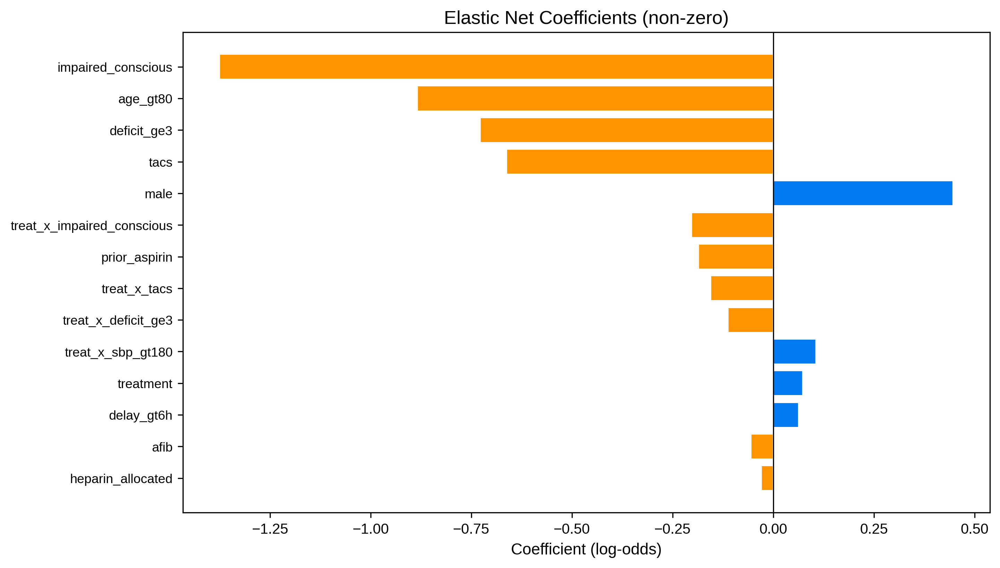
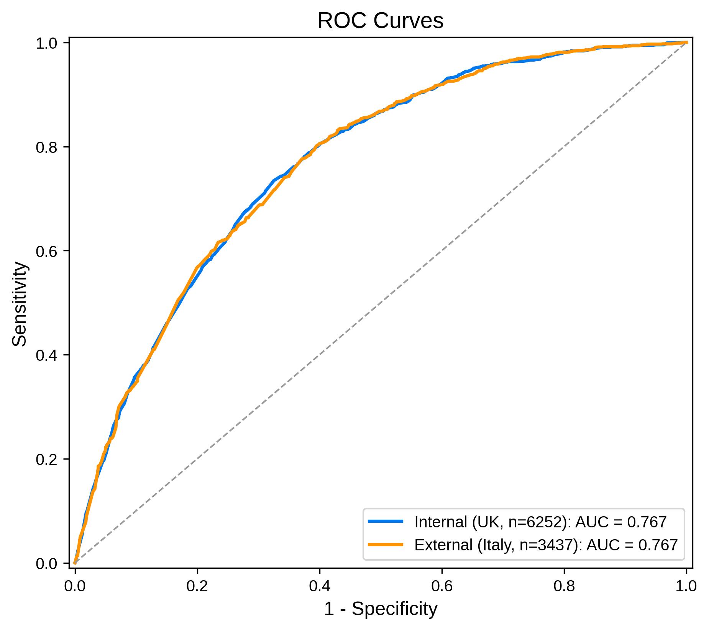
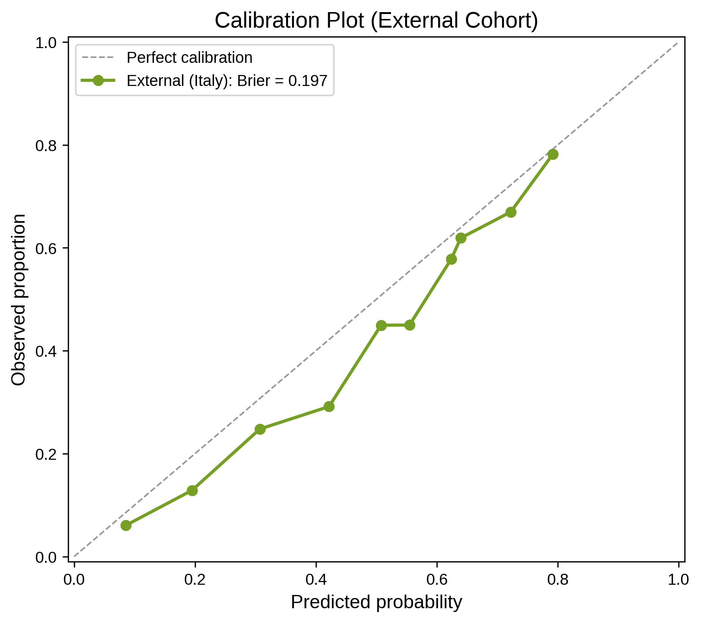
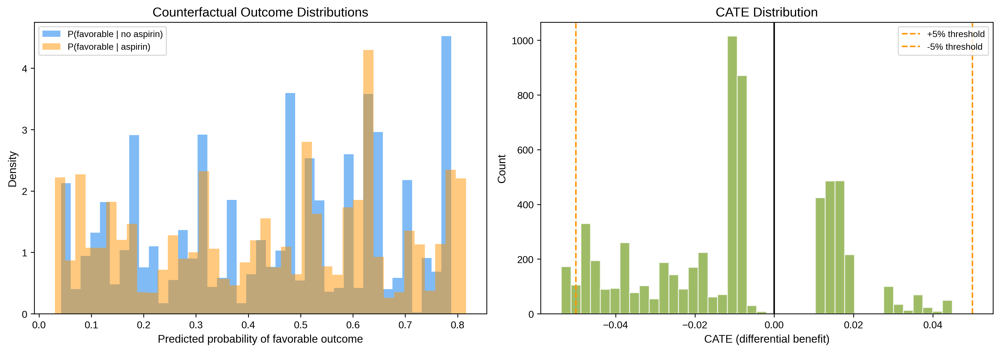
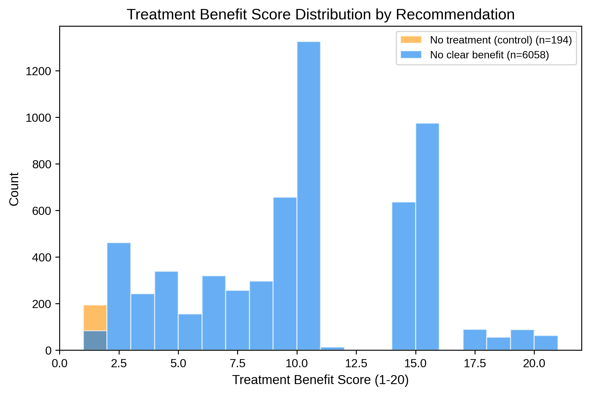
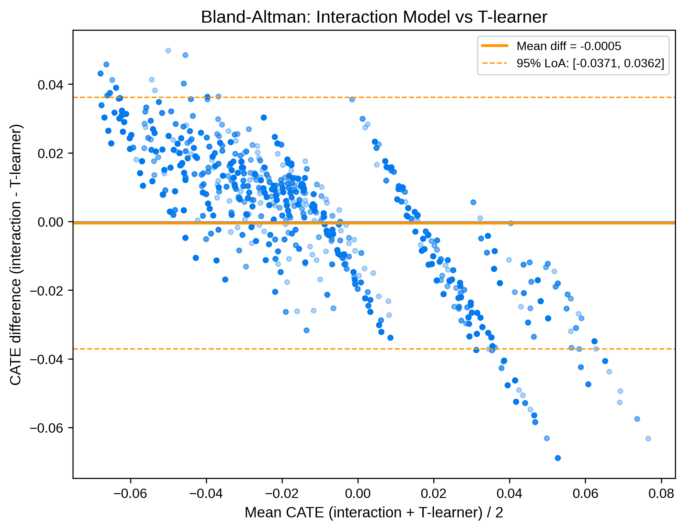
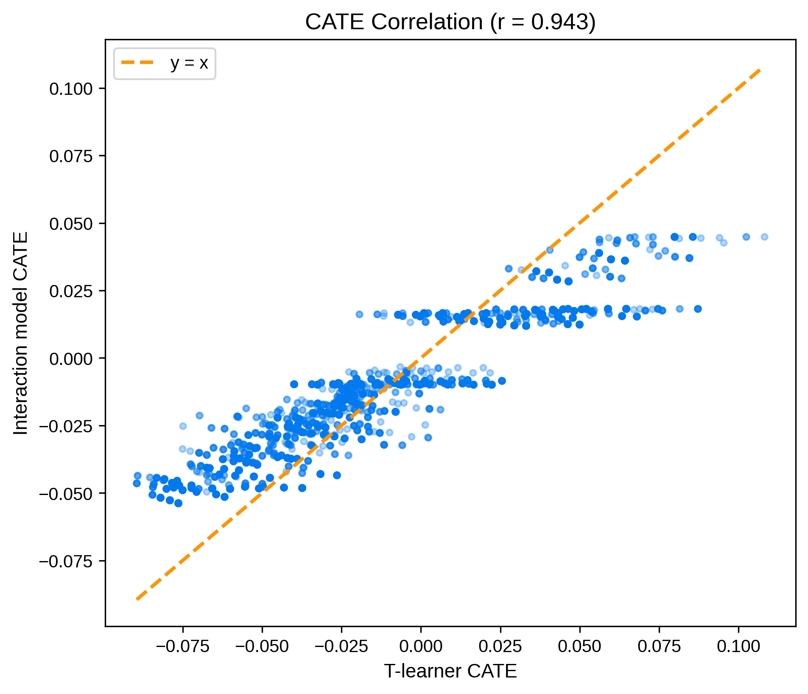

Stroke Treatment Benefit Predictor: Counterfactual Treatment Estimation with the International Stroke Trial
Department of Neuroradiology, Rockefeller Neuroscience Institute, West Virginia University, Morgantown, WV, USA
August 2026
Abstract
We apply counterfactual treatment estimation to predict individualized treatment benefit in acute stroke, using the International Stroke Trial (IST, n = 19,435). The pipeline combines Elastic Net logistic regression with IPTW weighting, treatment×covariate interaction terms, and counterfactual prediction to estimate individualized treatment benefit (CATE). An Elastic Net model (C = 0.1, l1_ratio = 0.9) achieved internal CV AUC = 0.763 (95% CI: 0.737–0.787) and external AUC = 0.767 on an Italian cohort. A T-learner benchmark showed strong concordance with the interaction model (Pearson r = 0.943). The tool is deployed as a static, client-side web application requiring no server infrastructure.
1. Overview
Counterfactual treatment estimation predicts individualized treatment benefit in acute stroke by modeling patient outcomes under both treatment and control scenarios. We apply this approach to the publicly available IST, with aspirin vs. no aspirin as the treatment comparison and 6-month functional outcome (OCCODE 3–4 = independent) as the endpoint.
2. Dataset
| Property | Value |
|---|---|
| Source | Edinburgh DataShare |
| Total patients | 19,435 |
| Treatment | Aspirin (RXASP), 50/50 randomized |
| Outcome | Favorable = OCCODE 3–4 (independent at 6 months) |
| Development cohort | UK (n = 6,252; 20.8% favorable) |
| External cohort | Italy (n = 3,437; 42.7% favorable) |
Citation: IST Collaborative Group. The International Stroke Trial (IST): a randomised trial of aspirin, subcutaneous heparin, both, or neither among 19,435 patients with acute ischaemic stroke. Lancet 1997;349:1569–81.
3. Methods
3.1 Feature Engineering
Eleven binarized clinical features were derived from IST variables: covariate schema:
| Feature | IST variable | Threshold |
|---|---|---|
| Age > 80 | AGE | > 80 years |
| Male sex | SEX | = M |
| Atrial fibrillation | RATRIAL | = Y |
| SBP > 180 | RSBP | > 180 mmHg |
| Impaired consciousness | RCONSC | Drowsy or Unconscious |
| Delay > 6h | RDELAY | > 6 hours |
| TACS | STYPE | = TACS |
| ≥3 deficits | RDEF1–RDEF8 | count of Y ≥ 3 (NIHSS proxy) |
| Prior aspirin | RASP3 | = Y |
| Infarct visible | RVISINF | = Y |
| Heparin allocated | RXHEP | L, M, or H (factorial co-treatment) |
Missing values were imputed via MICE (Multiple Imputation by Chained Equations), fit on the development cohort and applied to the external cohort. No variables exceeded 10% missingness.
3.2 Treatment × Covariate Interactions
Eleven interaction terms (treat_x_{feature}) were created by multiplying the treatment indicator with each main effect, allowing the model to capture heterogeneous treatment effects. The full feature matrix is: [11 main effects, treatment, 11 interactions] = 23 columns.
3.3 IPTW
Propensity scores were estimated via logistic regression of treatment on all 11 covariates. Stabilized weights were computed and truncated at the 1st/99th percentiles. Since IST was randomized, IPTW weights are near 1.0 (range 0.956–1.047) and all covariates were already balanced (max unweighted SMD = 0.015). IPTW is included for methodological completeness.

3.4 Elastic Net Logistic Regression
The primary model is an Elastic Net penalized logistic regression with class_weight = "balanced", tuned via grid search over C ∈ {0.01, 0.05, 0.1, 0.5, 1.0, 5.0} and l1_ratio ∈ {0.1, 0.3, 0.5, 0.7, 0.9}. Best parameters: C = 0.1, l1_ratio = 0.9. Comparator models (Decision Tree, SVC, XGBoost) were trained with the same CV protocol.

3.5 Counterfactual Treatment Estimation
For each patient, the fitted model predicts P(favorable) under both treatment scenarios by setting treatment = 1 or 0 and recomputing interaction terms. CATE = P(favorable | aspirin) − P(favorable | no aspirin). The Treatment Benefit Score (1–20) maps CATE to a clinical scale using the 1st/99th percentile range. Treatment recommendation uses a ±5% threshold.
3.6 T-learner Benchmark
A T-learner meta-learner trains separate Elastic Net models on the treated and control subgroups (main-effect features only), then computes CATE as the difference in predicted probabilities. Concordance with the interaction model is assessed via Pearson correlation, Bland-Altman analysis, and clinical recommendation agreement.
3.7 Validation
Internal: repeated stratified 5-fold CV (100 repeats = 500 folds) + 1000-iteration bootstrap for 95% CIs. External: frozen model applied to the Italian cohort with bootstrap CIs and calibration assessment.
4. Results
4.1 Model Performance
| Metric | Internal CV (500 folds) | Bootstrap (1000 iter) | External (Italy) |
|---|---|---|---|
| AUC | 0.763 (0.737–0.787) | 0.767 (0.754–0.781) | 0.767 (0.750–0.783) |
| Brier | 0.203 (0.194–0.213) | 0.202 (0.197–0.207) | 0.197 (0.192–0.203) |
| Sensitivity | 0.775 (0.719–0.823) | 0.781 (0.759–0.802) | 0.802 (0.782–0.822) |
| Specificity | 0.623 (0.589–0.660) | 0.625 (0.611–0.639) | 0.605 (0.583–0.626) |
| F1 | 0.483 (0.458–0.508) | 0.486 (0.467–0.505) | 0.688 (0.669–0.705) |


4.2 Model Comparison
| Model | 5-fold CV AUC |
|---|---|
| Elastic Net (selected) | 0.763 |
| Decision Tree | 0.755 |
| XGBoost | 0.755 |
| SVC | 0.741 |
4.3 Key Coefficients
| Feature | Coefficient | Odds Ratio | Direction |
|---|---|---|---|
| Impaired consciousness | −1.376 | 0.253 | ↓ Favorable |
| Age > 80 | −0.885 | 0.413 | ↓ Favorable |
| ≥3 deficits | −0.729 | 0.483 | ↓ Favorable |
| TACS | −0.663 | 0.515 | ↓ Favorable |
| Male sex | +0.447 | 1.563 | ↑ Favorable |
| Treatment (aspirin) | +0.073 | 1.076 | ↑ Favorable |
4.4 Counterfactual Estimation
| Statistic | Value |
|---|---|
| CATE mean | −0.011 (−1.1%) |
| CATE range | [−0.054, +0.045] |
| Treatment Benefit Score mean | 9.8 / 20 |
| No clear benefit | 6,058 (96.9%) |
| No treatment recommended | 194 (3.1%) |
| Treatment recommended | 0 (0%) |


4.5 T-learner Benchmark
| Metric | Result |
|---|---|
| Pearson r | 0.943 |
| Bland-Altman mean diff | −0.0005 |
| 95% LoA | ±0.037 |
| Recommendation agreement | 77.7% |


5. Limitations
- Aspirin effect is modest. The treatment OR (1.076) reflects a small average treatment benefit. CATE values are small (±5%) and 96.9% of patients fall within the "no clear benefit" threshold. This is clinically realistic but limits the tool's discriminative utility for treatment selection.
- IST is randomized. IPTW weights are near 1.0, so IPTW serves as a methodological demonstration rather than correcting real confounding by indication.
- Binarized features. Continuous variables are binarized at clinical thresholds, sacrificing granularity for interpretability.
- Single external cohort. External validation uses only the Italian subset of IST. Additional cohorts from different healthcare systems would strengthen generalizability.
- Educational tool only. This project is for learning purposes and must not be used for clinical decision-making.